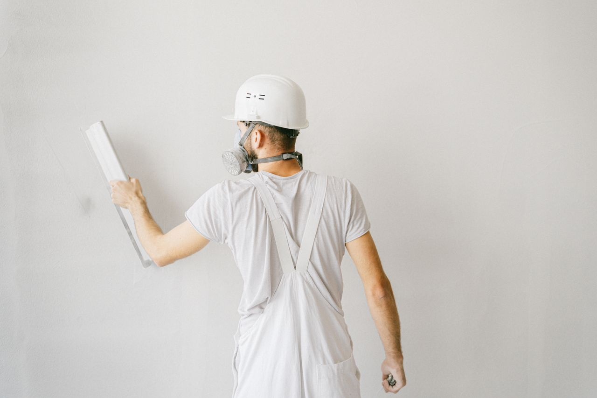

Cloisons et création de pièces
Diviser un séjour, créer une chambre, fermer une mezzanine. Plaques standard, hydrofuges pour salle de bain ou phoniques pour une chambre d'enfant.
Plâtrier plaquiste · Lyon et Rhône
Création de pièces, faux plafonds, doublages isolants, enduits et reprise de fissures. On vient voir votre chantier gratuitement et vous recevez un devis détaillé sous 48 h.
Rappel dans la journée si vous laissez votre numéro avant 16 h.

Cliquez sur votre situation : le formulaire de devis se remplit tout seul.
Nos travaux
Diviser un séjour, créer une chambre, fermer une mezzanine. Plaques standard, hydrofuges pour salle de bain ou phoniques pour une chambre d'enfant.
Abaisser un plafond trop haut, cacher des gaines ou une poutre, intégrer des spots. Plafonds droits, en caisson ou avec corniche lumineuse.
Doublage des murs froids avec isolant, isolation des combles aménagés. Des pièces plus chaudes l'hiver et plus calmes toute l'année.
Murs anciens, papier peint arraché, trous de chevilles : on reprend toute la surface pour des murs parfaitement plans avant peinture.
Diagnostic, dépose des parties abîmées, reprise à l'identique. Nous vous remettons un devis et des photos utilisables pour votre assureur.
Restauration de corniches et de rosaces dans les appartements anciens, reproduction à l'identique des profils abîmés.
Comment ça se passe
Par téléphone ou via le formulaire. Décrivez vos travaux en quelques mots, une photo aide beaucoup.
Visite gratuite sous 72 h en général. On mesure, on écoute ce que vous voulez et on vous conseille.
Chaque poste chiffré : matériaux, surfaces, main-d'œuvre, durée. Le prix signé ne bouge plus.
Date de démarrage tenue, sols et meubles protégés, aspiration chaque soir. Vous validez avant notre départ.
Chantiers récents
Lyon 3e · Appartement
Villeurbanne · Maison
Lyon 6e · Haussmannien
Nos engagements
« Devis reçu le lendemain de la visite, chantier fini dans les temps. Et vraiment aucune poussière dans le reste de l'appartement. »
« Après le dégât des eaux, ils ont préparé un devis clair pour l'assurance. Le plafond est comme neuf. »
Questions fréquentes
Votre question n'est pas là ?
Appelez-nous au 04 65 71 23 48.
Le prix dépend de la surface, du type de plaque (standard, hydrofuge, phonique), de l'isolant et des finitions. C'est pourquoi nous passons voir le chantier avant de chiffrer : vous recevez un prix ferme, poste par poste, et non une fourchette.
Le plaquiste pose des plaques de plâtre sur ossature (cloisons, doublages, faux plafonds). Le plâtrier travaille aussi le plâtre traditionnel et les enduits. Nous faisons les deux, ce qui évite de faire venir deux entreprises.
Une cloison avec porte dans une pièce : 2 à 4 jours. Un faux plafond de 20 m² : 2 à 3 jours. La durée exacte est écrite sur le devis, avec la date de démarrage.
Il faut laisser sécher les bandes et l'enduit, en général 48 h à quelques jours selon l'épaisseur, la saison et l'aération. Nous vous donnons la date exacte à la fin du chantier.
Oui, c'est la majorité de nos chantiers. On isole la zone de travail, on protège les sols et on nettoie chaque soir pour que vous puissiez vivre normalement.
Oui. Après un dégât des eaux, nous établissons un devis détaillé avec photos que vous transmettez à votre assureur, et nous intervenons dès son accord.
Devis gratuit
Deux minutes suffisent. On vous rappelle pour fixer la visite, sans engagement.
Du lundi au vendredi, 7 h 30 à 18 h
14 rue des Artisans, 69007 Lyon
Nous intervenons à Lyon (tous arrondissements), Villeurbanne, Vénissieux, Caluire-et-Cuire, Bron, Écully, Oullins, Saint-Priest, Tassin-la-Demi-Lune et alentours.